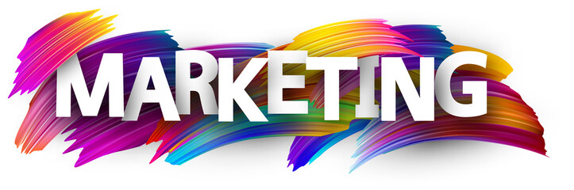
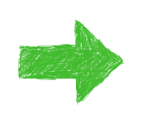

TIPS DEL MARKETING DIGITAL 2024
Estos consejos te ayudarán a comenzar a trabajar con el MD
Enfocate en crear experiencias únicas

1.- Fija tus objetivos
2.- Investiga a las empresas
3.- Actualizate y formate
4.- Ten presencia en RRSS
5.- Crea tu propia web/blog
